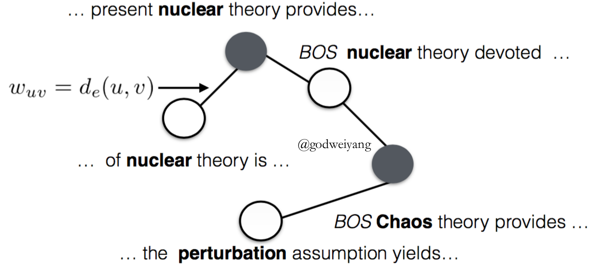

历经几个星期的磨难，文本挖掘课的presentation课件初稿基本完成了，1月中下旬开讲，这次讲的是基于少量标注数据的序列标注，下面是我的综述。
Outline
- Sequence Tagging
- Semi-supervised Learning
- Transfer Learning
- Conclusions
- References
Sequence Tagging
Introduction
Definition
Sequence tagging is a type of pattern recognition task that involves the algorithmic assignment of a categorical label to each member of a sequence of observed values.
Significance
Sequence tagging is one of the first stages in most natural language processing applications, such as part-of-speech tagging, chunking and named entity recognition.
Approaches
Traditional modelsHidden Markov ModelsConditional Random Fields
- Neural network models
- RNN, LSTM, GRU
Neural Network Model
Results
Sequence Tagging with Little Labeled Data
Backgrounds
Although recent neural networks obtain state-of-the-art performance on several sequence tagging tasks, they can’t be used for tasks with little labeled data.
Approaches
Self-taught learningActive learningTransductive learning- Semi-supervised learning
- Transfer learning
Semi-supervised Learning
References
Language Models Added
- Semi-supervised Multitask Learning for Sequence Labeling. Marek Rei. ACL17.
- Semi-supervised Sequence Tagging with Bidirectional Language Models. Matthew et al. ACL17.
Graph-based
- Efficient Graph-Based Semi-Supervised Learning of Structured Tagging Models. Subramanya et al. EMNLP10.
- Scientific Information Extraction with Semi-supervised Neural Tagging. Luan et al. EMNLP17.
- Graph-based Semi-supervised Acoustic Modeling in DNN-based Speech Recognition. Liu et al. IEEE SLT14.
Language Models Added
Language Modeling Objective
\[\begin{array}{l}\overrightarrow { {m_t}} = \tanh (\overrightarrow { {W_m}} \overrightarrow { {h_t}} )\\\overleftarrow { {m_t}} = \tanh (\overleftarrow { {W_m}} \overleftarrow { {h_t}} )\\P({w_{t + 1}}|\overrightarrow { {m_t}} ) = {\rm{softmax}}(\overrightarrow { {W_q}} \overrightarrow { {m_t}} )\\P({w_{t - 1}}|\overleftarrow { {m_t}} ) = {\rm{softmax}}(\overleftarrow { {W_q}} \overleftarrow { {m_t}} )\\\overrightarrow E = - \sum\limits_{t = 1}^{T - 1} {\log (P({w_{t + 1}}|\overrightarrow { {m_t}} ))} \\\overleftarrow E = - \sum\limits_{t = 2}^T {\log (P({w_{t - 1}}|\overleftarrow { {m_t}} ))} \\E = E + \gamma (\overrightarrow E + \overleftarrow E )\end{array}\]
Results
Language Models Added
Bidirectional Language Model
\[\begin{array}{l}h_k^{LM} = [\overrightarrow {h_k^{LM}} ;\overleftarrow {h_k^{LM}} ]\\{h_{k,1}} = [\overrightarrow { {h_{k,1}}} ;\overleftarrow { {h_{k,1}}} ;h_k^{LM}]\end{array}\]
Alternative
- Replace $[\overrightarrow { {h_{k,1}}} ;\overleftarrow { {h_{k,1}}} ;h_k^{LM}]$ with $f([\overrightarrow { {h_{k,1}}} ;\overleftarrow { {h_{k,1}}} ;h_k^{LM}])$.
- Concatenate the LM embeddings at different locations in the baseline sequence tagger.
- Decrease the number of parameters in the second RNN layer.
Results

Conclusions
- The language model transfer across domains.
- The model is robust even when trained on a large number of labeled data.
- Training the sequence tagging model and language model together increases performance.
Graph-based
- Steps
- Construct a graph of tokens based on their semantic similarity.
- Use the CRF marginal as a regularization term to do label propagation on the graph.
- The smoothed posterior is then used to either interpolate with the CRF marginal or as an additional feature to the neural network.
- Graph Construction
- ${w_{uv}} = {d_e}(u,v)$ if $v \in K(u)$ or $u \in K(v)$.
- Label Propagation
 - Uncertain Label Marginalizing
\[\mathcal{Y}({x_t}) = \left\{ {\begin{array}{*{20}{c}}{\{ {y_t}\} }&{ {\rm{if \ }}p({y_t}|x;\theta ) > \eta }\\{ {\rm{All \ label \ types}}}&{ {\rm{otherwise}}}\end{array}} \right.\] - Score
\[\phi (y;x,\theta ) = \sum\limits_{t = 0}^n { {T_{ {y_t},{y_{t + 1}}}}} + \sum\limits_{t = 1}^n { {P_{t,{y_t}}}} \] - Probability
\[{p_\theta }(\mathcal{Y}({x^k})|{x^k}) = \frac{ {\sum\nolimits_{ {y^k} \in \mathcal{Y}({x^k})} {\exp (\phi ({y^k};{x^k},\theta ))} }}{ {\sum\nolimits_{y’ \in Y} {\exp (\phi (y’;x,\theta ))} }}\]
Results
Conclusions
- In-domain data performs better than cross-domain data.
- The combination of in-domain data and ULM algorithms performs well.
- We can add language models into the model in the future to capture the context information.
Transfer Learning
References
Cross-domain Transfer
- Transfer Learning for Sequence Tagging with Hierarchical Recurrent Networks. Yang et al. ICLR17.
- Improving Named Entity Recognition for Chinese Social Media with Word Segmentation Representation Learning. Peng et al. ACL16.
- Multi-task Domain Adaptation for Sequence Tagging. Peng et al. Workshop17.
Cross-lingual Transfer
- Transfer Learning for Sequence Tagging with Hierarchical Recurrent Networks. Yang et al. ICLR17.
- Cross-Lingual Transfer Learning for POS Tagging without Cross-Lingual Resources. Kim et al. EMNLP17.
Cross-domain Transfer
- Label mapping exist

- Disparate label sets
Domain Projections
- Domain Masks
\[\begin{array}{l}{m_1} = [\overrightarrow 1 ,\overrightarrow 1 ,\overrightarrow 0 ],{m_2} = [\overrightarrow 1 ,\overrightarrow 0 ,\overrightarrow 1 ]\\\hat h = {m_d} \odot h\end{array}\] - Linear Projection
\[\hat h = {T_d}h\]
Results
Conclusions
- Multi-task learning can help domain adaptation.
- The number of shared parameters has great impact on the performance.
- We may use other domain adaptation methods besides parameter sharing and representation learning.
Cross-lingual Transfer
- Sequence Tagging Loss
\[{\mathcal{L}_p} = - \sum\limits_{i = 1}^S {\sum\limits_{j = 1}^N { {p_{i,j}}\log ({ {\hat p}_{i,j}})} }\] - Language Classifier Loss
\[{\mathcal{L}_a} = - \sum\limits_{i = 1}^S { {l_i}\log ({ {\hat l}_i})}\] - Bidirectional Language Model Loss
\[{\mathcal{L}_l} = - \sum\limits_{i = 1}^S {\sum\limits_{j = 1}^N {\log (P({w_{j + 1}}|{f_j})) + \log (P({w_{j - 1}}|{b_j}))} }\] - Total Loss
\[\mathcal{L} = {w_s}({\mathcal{L}_p} + \lambda {\mathcal{L}_a} + \lambda {\mathcal{L}_l})\]
Results
Conclusions
- The language classifier can train the common LSTM to be language-agnostic.
- Either too many or too little labeled data decrease the performance.
- Multiple source languages can be used to increase the performance.
Conclusions
Semi-supervised Learning vs Transfer Learning
- It seems that semi-supervised learning is better than transfer learning on some tasks.
- Semi-supervised learning is not always useful for the lack of unlabeled data in the same domain.
- Andrew Ng had said that transfer learning is an important research direction in the next five years.
Future
- Semi-supervised learning and transfer learning can be combined to increase performance.
- Other methods like active learning can be added.
References
Xuezhe Ma and Eduard Hovy. (2016).
End-to-end Sequence Labeling via Bi-directional LSTM-CNNs-CRF.
In Proceedings of the 54th Annual Meeting of the Association for Computational Linguistics, pages 1064–1074, Berlin, Germany, August 7-12, 2016.
Marek Rei. (2017).
Semi-supervised Multitask Learning for Sequence Labeling.
In Proceedings of the 55th Annual Meeting of the Association for Computational Linguistics, pages 2121–2130, Vancouver, Canada, July 30 - August 4, 2017.
Matthew E. Peters, Waleed Ammar, Chandra Bhagavatula, Russell Power. (2017).
Semi-supervised Sequence Tagging with Bidirectional Language Models.
In Proceedings of the 55th Annual Meeting of the Association for Computational Linguistics, pages 1756–1765, Vancouver, Canada, July 30 - August 4, 2017.
Yi Luan, Mari Ostendorf, Hannaneh Hajishirzi. (2017).
Scientific Information Extraction with Semi-supervised Neural Tagging.
In Proceedings of the 2017 Conference on Empirical Methods in Natural Language Processing, pages 2631–2641, Copenhagen, Denmark, September 7–11, 2017.
Zhilin Yang, Ruslan Salakhutdinov, William W. Cohen. (2017).
Transfer Learning for Sequence Tagging with Hierarchical Recurrent Networks.
In ICLR 2017.
Joo-Kyung Kim, Young-Bum Kim, Ruhi Sarikaya, Eric Fosler-Lussier. (2017).
Cross-Lingual Transfer Learning for POS Tagging without Cross-Lingual Resources.
In Proceedings of the 2017 Conference on Empirical Methods in Natural Language Processing, pages 2822–2828, Copenhagen, Denmark, September 7–11, 2017.
Nanyun Peng, Mark Dredze. (2017).
Multi-task Domain Adaptation for Sequence Tagging.
In Proceedings of the 2nd Workshop on Representation Learning for NLP, pages 91–100, Vancouver, Canada, August 3, 2017.
Amarnag Subramanya, Slav Petrov, Fernando Pereira. (2010).
Efficient Graph-Based Semi-Supervised Learning of Structured Tagging Models.
In Proceedings of the 2010 Conference on Empirical Methods in Natural Language Processing, pages 167–176, MIT, Massachusetts, USA, 9-11 October 2010.
Yuzong Liu, Katrin Kirchhoff. (2014).
Graph-based Semi-supervised Acoustic Modeling in DNN-based Speech Recognition.
In IEEE SLT 2014.
Nanyun Peng, Mark Dredze. (2016).
Improving Named Entity Recognition for Chinese Social Media with Word Segmentation Representation Learning.
In Proceedings of the 54th Annual Meeting of the Association for Computational Linguistics, pages 149–155, Berlin, Germany, August 7-12, 2016.